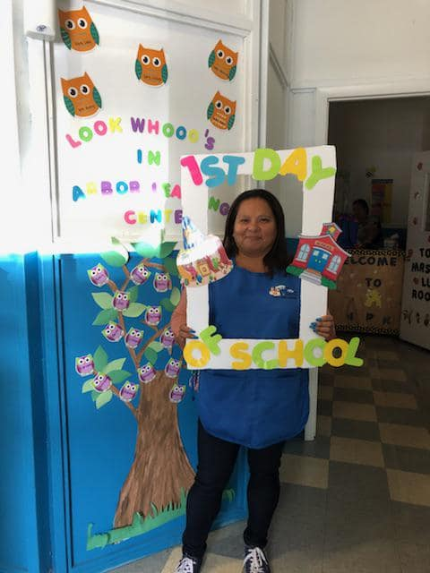
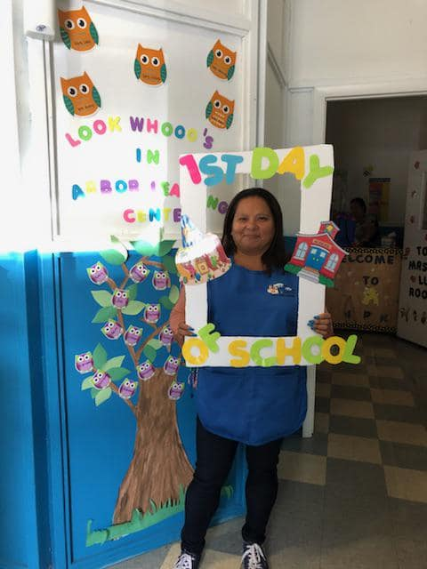

About Arbor Learning Center

Mission Statement
The board and staff are committed to providing quality care to children that is progressive and responsive to family needs. We value every child, every parent, and the work-life balance of our employees.
Programs
Day Care Program: Arbor Learning Center offers cognitive development, reading and writing, social development, risk watch, second step and outdoor play.
- Toddlers and pre-school children
- Full and part time
- Nutritious snacks and hot lunches
- Fully fenced playground in a natural setting
- Computers
- Introduction to Spanish
- Pre-math, pre-reading, and writing
- Before and after school
The Environment
You will be placing your child in a safe and comfortable environment, designed to stimulate, nurture and teach children at all levels of development. Our policy of full and open communications is derived from many years of training and experience in providing support to child and parents alike. Please feel free to ask for a tour of our facility anytime, so you can learn more about us. We work on the premise of "owning ones own behavior" and make every effort to address any concerns.
Activities are updated and maintained. We continually replace, rearrange and assess for further learning possibilities. By understanding the development and cognitive capacities of each child, we match learning to abilities. Teachers guide children, allowing them to problem solve, thus increasing their sense of effectiveness and comprehension.
Each day includes various activities:
- Free Play: Large blocks of time during the day consist of free play. Free play allows children to choose their own activities from well-defined activity centre's. Teachers interact with children, providing guidance and encouraging them to problem solve, promoting learning.
- Group Time: This time consists of children-teacher or teacher directed activities. Crafts stories, songs, etc. It can be based on specific themes for special occasions. These activities enhance eye and hand co-ordination, fine motor skills, and creativity, pre-reading and pre-writing skills. Children are encouraged to participate.
- Gross Motor: Play This time consists of children-teacher or teacher directed activities promoting physical Development. Conducted indoors and outdoors, depending on the weather.
- Hygiene Time: This time provides an opportunity for children to acquire good personal habits (e.g. Hand Washing).
- Transition Time: Consists of a short time period between two activities. This period is kept to a minimum and usually does not last more than five minutes. It is a very busy time for both teachers and children. Transition songs enhance this short time.
- Rest Time: This period provides opportunity for younger children to sleep and for older children to rest. Alternate quiet activities are available for children who do not need to sleep. If a child spends a very long day at the centre, it is advisable to schedule sleep time so that the child can spend a quality evening with his/her parents.

The Curriculum
The Creative Curriculum® for Infants, Toddlers and Twos: We use this new edition to focus on relationships, responsive care, and routines and experiences for children younger than three. Features include a developmental curriculum linking curriculum and assessment, practical advice for including children with disabilities, research and theory behind the curriculum, special sections on two-year-olds, and building blocks for language and literacy, math, and science.

The Creative Curriculum® for Preschool, 4th Edition: This completely updated new edition of the research-based preschool curriculum model applies the latest theories and research on best practices in teaching and learning and the content standards developed by states and professional organizations. While keeping the original environmental-based approach of earlier editions, The Creative Curriculum for Preschool also clearly defines the teacher's vital role in connecting content, teaching, and learning for preschool children. It features goals and objectives linked directly to a valid and reliable assessment instrument (The Creative Curriculum Developmental Continuum for Ages 3—5) as well as one new interest area, the Discovery Area. Specific goals, activities, and ideas for a total of 11 interest areas, including table toys, blocks, sand, water, outdoor play, and computers. Strategies that help teachers meet the needs of all children, including those who have special needs or who are second-language learners. Includes child development and learning checklists.

Our Staff
The goal of our qualified staff is to provide an environment in which children can develop. Planning our activities in advance and supervised interaction make this possible. Communication and consistency between parents and staff is most important. Parents are welcome at the centre at all times.
 

Career Opportunities
Looking for the right opportunity? The chance to make a lasting impression on children's lives? The Arbor Learning Center team is continually looking for dedicated Early Childhood professionals to work directly with children or in a Management Capacity.
We offer:
- Competitive wages and benefits
- Flexible shifts
- Pleasant Environment
If you are interested in applying for a position at our facility please see the employee application, in the Forms section of our website. You can also reach us by phone, email, or via the contact section of our website if more convenient.